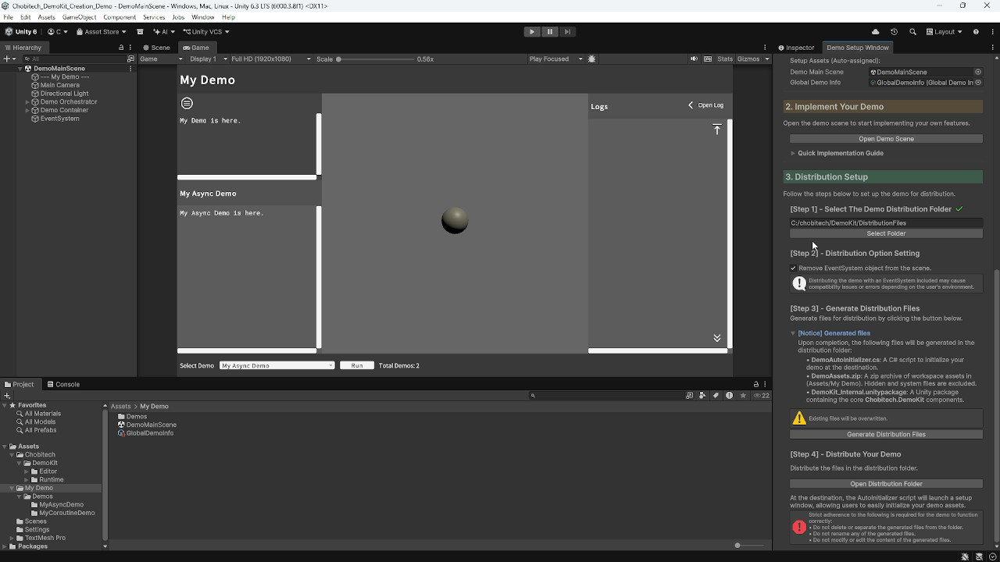

Chobitech.DemoKit
Chobitech.DemoKit simplifies your demo creation workflow through intuitive wizards and ready-to-use tools.

Key Features
- One-Stop Wizard: A comprehensive wizard that handles everything from demo initialization to distribution file generation.
- Dual Workflow Support: Seamlessly manage both Asynchronous (Task-based) and Coroutine-based demonstration logic with ease.
- Ready-to-Use UI: Includes a polished header, footer, description area, and a rich-text supported logging system for immediate use.
- Smart Execution Management: Built-in support for CancellationToken and lifecycle hooks such as
OnDemoCompletedandOnDemoCanceled. - Clean Architecture: Efficiently manage multiple demo cases within a single main scene, keeping your project organized and clutter-free.
Installation
via Asset Store
- chobitech Asset Store page: Please add Chobitech.DemoKit to My Assets and import your project.
via Unity Package
- Download the latest
.unitypackagefrom GitHub Release. - Drag and drop the downloaded file into your Unity Project, or import it via the menu [Assets] > [Import Package] > [Custom Package] and select the
.unitypackagefile.
Getting Started
- Follow our Getting Started guide to build your demo.
- Also, check the API Reference for advanced customization.
Dependencies
Unity.TextMeshPro
Change Log
Licenses
- Chobitech.DemoKit is licensed under the MIT License.
© 2026 chobitech. Licensed under the MIT License.